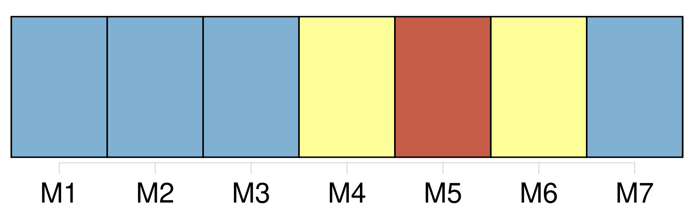
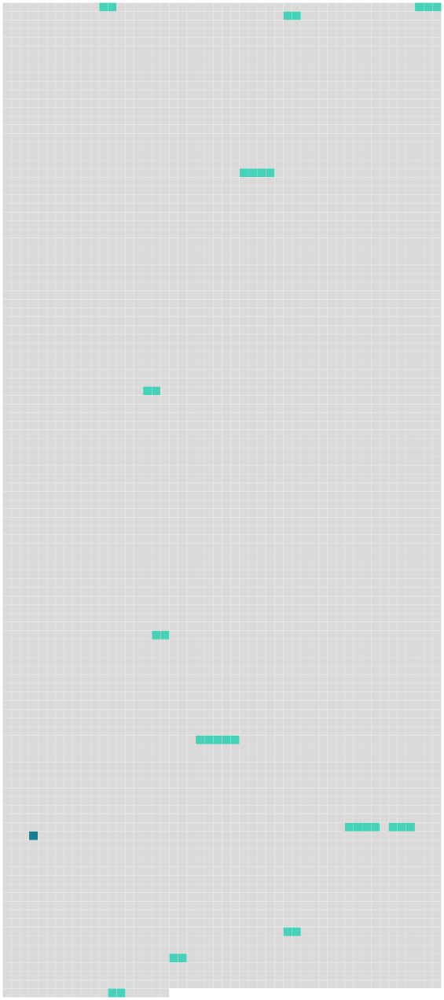

Longueur nb maillons : 13 mentions |
 |
Une puissance presque diabolique lui permettait de sentir le vent de [cette voix] , de respirer la poudre embaumée dont ces cheveux étaient imprégnés, de voir les méplats de ce visage, d’ y compter les veines bleues qui en nuançaient la peau satinée. Enfin [cette voix agile] , fraîche et d’ un timbre argenté, souple comme un fil auquel le moindre souffle d’ air donne une forme, qu’ il roule et déroule, développe et disperse, [cette voix] attaquait si vivement son âme qu’ il laissa plus d’ une fois échapper de ces cris involontaires arrachés par les délices convulsives trop rarement données par les passions humaines. [29 phrases] « Depuis quelques jours, repris -je après une pause, Sarrasine était si fidèlement venu s’ installer dans sa loge, et ses regards exprimaient tant d’ amour, que sa passion pour [la voix de Zambinella] aurait été la nouvelle de tout Paris, si cette aventure s’ y fût passée ; mais en Italie, madame, au spectacle, chacun y assiste pour son compte, avec ses passions, avec un intérêt de cœur qui exclut l’ espionnage des lorgnettes. [56 phrases]
Sarrasine, tout mécontent de ne pouvoir lui parler que devant témoins, s’ assit poliment auprès d’ elle, et l’ entretint de musique en la louant sur son prodigieux talent ; mais [sa voix] tremblait d’ amour, de crainte et d’ espérance. [75 phrases]
— Les orgies m’ abîment [la voix] [49 phrases] [Cette voix empreinte de faiblesse] , l’ attitude, les manières et les gestes de Zambinella, marqués de tristesse, de mélancolie et de découragement, réveillaient dans son âme toutes les richesses de la passion. [28 phrases]
[Cette voix d’ ange] , [cette voix délicate] , eût été un contre-sens si [elle] fût sortie d’ un corps autre que le tien. [34 phrases] C’ est moi, monsieur, qui ai doté Zambinella de [sa voix] [8 phrases] Son regard flamboyant eut une sorte d’ influence magnétique sur Zambinella, car le musico finit par détourner subitement la vue vers Sarrasine, et alors [sa voix] céleste s’ altéra. [5 phrases]
Ce fut la première fois qu’ il exerça cette tyrannie capricieuse qui, plus tard, ne le rendit pas moins célèbre que son talent et son immense fortune, due, dit -on, non moins à [sa voix] qu’ à sa beauté. |
 |
Il est possible de télécharger la ressource sur la page Ortolang |
Si vous avez des questions ou vous voyez des erreurs, merci d'envoyer un mail à silvia.federzoni89@gmail.com |